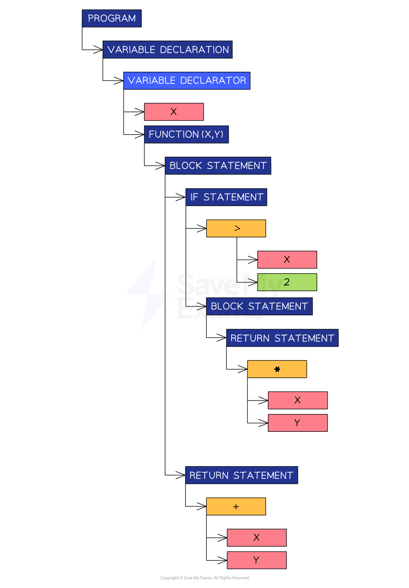
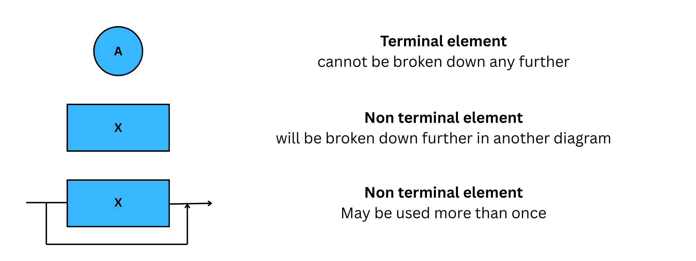
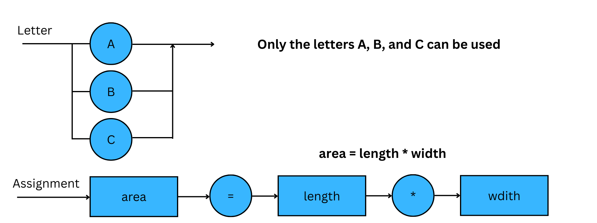

Translation Process
Interpreter execution
What is an interpreter?
- An interpreter is a type of translator that executes high-level code line by line
- It does not convert the entire program into a separate machine code file
How does it work?
- The source code is read, analysed, and executed one line at a time
- No complete machine code file is produced, only immediate execution happens
- If there is an error in a line, execution stops, and the error is reported immediately
| Feature | Explanation |
|---|---|
| No output file | It does not generate a standalone .exe or machine code file |
| Immediate execution | Runs the code as it is interpreted |
| Slower execution | Each line is translated every time the program runs |
| Useful for development | Good for testing and debugging during coding |
| Stops on first error | Detects and reports errors as they occur |
Example use cases
- Used in educational tools, like Python shells or BASIC interpreters
- Helpful for rapid prototyping or when frequent changes are made
Compilation stages
What is compilation?
- Compilation is a process that translates a program written in a high-level programming language into machine code
- Only machine code can be executed by a computer
- There are four stages involved in this process:
- Lexical Analysis
- Syntax Analysis
- Code Generation
- Optimisation
Lexical analysis
- In A Level Computer Science, lexical analysis means studying the words or vocabulary of a language
- This stage involves identifying lexical ‘tokens’ in the code
- Tokens represent small meaningful units in the programming language, such as:
- Keywords
- var, const, function, for, while, if
- Identifiers
- Variable names, function names
- Operators
- ’+’, ‘++’, ‘-‘, ‘*‘
- Separators
- ’,’ ‘;’, ‘{‘, ‘}’, ‘(‘, ‘)’
- Keywords
- During this stage, unnecessary elements like comments and whitespace are ignored
- For example, if the following code is being compiled:
var x = function(x,y) {
if(x>2) {
return x*y;
}
return x+y;
}
- The result of lexical analysis is a token table
| Token | Type | |
|---|---|---|
| 1 | var | Keyword |
| 2 | x | Identifier |
| 3 | = | Operator |
| 4 | function | Keyword |
| 5 | ( | Separator |
| 6 | x | Identifier |
| 7 | , | Separators |
| 8 | y | Identifier |
| 9 | ) | Separator |
| 10 | { | Separator |
| 11 | return | Keyword |
| 12 | x | Identifier |
| 13 | * | Operator |
| 14 | y | Identifier |
| 15 | ; | Separator |
| 16 | } | Separator |
Syntax analysis
- Now that tokens have been identified, syntax analysis makes sure they all adhere to the syntax rules of the programming language
- A symbol, e.g. ‘$’ could be a valid token but not a valid character according to particular programming languages
- The dollar symbol would be flagged as breaking the syntax rules
- Other syntax errors programmers commonly make include mismatched parentheses or missing semicolons
- If the code passes the syntax analysis, the compiler can create an Abstract Syntax Tree (AST)
- An AST is a graph-based representation of the code being compiled
- An AST is an efficient way to represent the code for the next step
Example abstract syntax tree
- For the same code as above, the following abstract syntax tree can be created

Abstract syntax tree
Code generation
- This step takes the AST and traverses it to generate object code that can be executed by the computer
Optimisation
- This step modifies the code to make it more efficient without changing its functionality
- This is important to attempt because it reduces the memory required to run the code, which leads to faster execution
- A common optimisation action is removing duplicate code
- If an ‘add’ function is written twice in the source code, a sophisticated compiler will notice this and include it only once in the object code
Syntax Rules
BNF & syntax diagrams
- When writing programs, you must follow a set of strict rules known as syntax — the structure that defines how code must be written.
- Just like spoken languages have grammar rules, programming languages have syntax rules
- Each language has its own syntax, e.g. Python uses indentation, Java uses semicolons
- Just like spoken languages have grammar rules, programming languages have syntax rules
- Programs are first written in source code (a high-level language like Python, Java, etc.)
- To run the program, this source code must be translated into machine code
- For translation to work, syntax must be precisely defined to avoid ambiguity
- Translators (compilers or interpreters) rely on these rules to correctly convert the program into a form the CPU can understand
Regular expressions and meta-languages
- Regular expressions are used to describe simple patterns in text or syntax
- Many programming constructs (like variable names or simple statements) can be defined using regular expressions
- However
- Some aspects of a programming language are too complex for regular expressions alone
- When regular expressions aren’t enough, we use a meta-language
- A language used to describe the structure of another language
- The most common example is Backus-Naur Form (BNF) or syntax diagrams
- These allow us to define:
- Full grammar rules
- Nested structures
- Hierarchical syntax
What is Backus-Naur form (BNF)?
- BNF is a meta-language, a way of writing rules that define the syntax of programming languages or data structures
- BNF is used to:
- Describe formal grammar
- Define how statements and expressions are structured
- Ensure that syntax rules are unambiguous and machine-readable
- BNF uses a set of rules made up of:
| Term | Meaning |
|---|---|
| Non-terminal | A category or component (e.g. , ) |
| Terminal | An actual value or symbol (e.g. 0, 1, +, if) |
| ::= | “Is defined as”, separates the name from its definition |
| | | “or”, it gives alternative definitions |
Example 1
<digit> ::= 0 | 1 | 2 | 3 | 4 | 5 | 6 | 7 | 8 | 9
<number> ::= <digit> | <digit> <number>
<digit>is defined as any single digit 0–9<number>is defined as:- a single digit, or
- a digit followed by another number (i.e. multiple digits)
Example 2
<number>contains one or more digits- BNF for
<number>and use it to define<IDcode>, which consists of a<number>followed by either a<letter>or another<number>
<number> ::= <digit> | <number><digit>
<IDcode> ::= <number><letter> | <number><number>
- Recursive definition of one or more items
- Use of
|for choice - Application to a second rule with multiple components
What is a syntax diagram?
- A syntax diagram is a graphical representation of BNF (meta-language)
- It uses symbols to map directly to the structure of BNF
- The symbols used are:


Expression Evaluation
Reverse Polish Notation (RPN)
What is RPN?
- Reverse Polish Notation (RPN) is a method of writing mathematical expressions where the operator comes after the operands
- This is also known as postfix notation
- Infix:
3 + 4 - RPN:
3 4 +
- Infix:
Why use RPN?
- No need for brackets: The order of operations is determined by position, not parentheses
- Easier for computers to evaluate using a stack
- Always unambiguous
How RPN works
- RPN uses a [[10.1 Data Types & Records#Data Types|Stack]] to evaluate expressions
1. Read from left to right
2. Push numbers onto the stack
3. When an operator is read:
- Pop the top two values from the stack
- Apply the operator
- Push the result back onto the stack 4. When the expression ends, the final result is at the top of the stack
Example: evaluate 3 4 + 2 ×
| Step | Action | Stack |
|---|---|---|
Read 3 |
Push to stack | 3 |
Read 4 |
Push to stack | 3 4 |
Read + |
Add 3 + 4 → 7 | 7 |
Read 2 |
Push to stack | 7 2 |
Read × |
Multiply 7 × 2 → 14 | 14 |
- Final result:
14
Example: convert this infix expression to RPN
(7 − 2 + 8) / (9 − 5)
- Split the expression into parts:
-
Left-hand side:
(7 − 2 + 8) -
This becomes:
( (7 − 2) + 8 ) -
Which in RPN is:
7 2 − 8 + -
Right-hand side:
(9 − 5) -
In RPN:
9 5 − -
Combine with the division
-
In RPN, that becomes:
7 2 − 8 + 9 5 − ÷RPN follows the evaluation order naturally, so there’s no need for brackets or precedence rules. Just: -
Work from inside brackets out
- Convert each sub-expression
- Add the operator after its operands
Summary
| Concept | Description |
|---|---|
| RPN (Postfix) | Operators follow operands |
| Stack | Used to store and evaluate values |
| Evaluation method | Push numbers, pop and evaluate on operator |
| Benefits | No brackets, no ambiguity, easy to compute with stack |